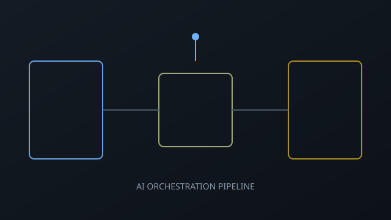
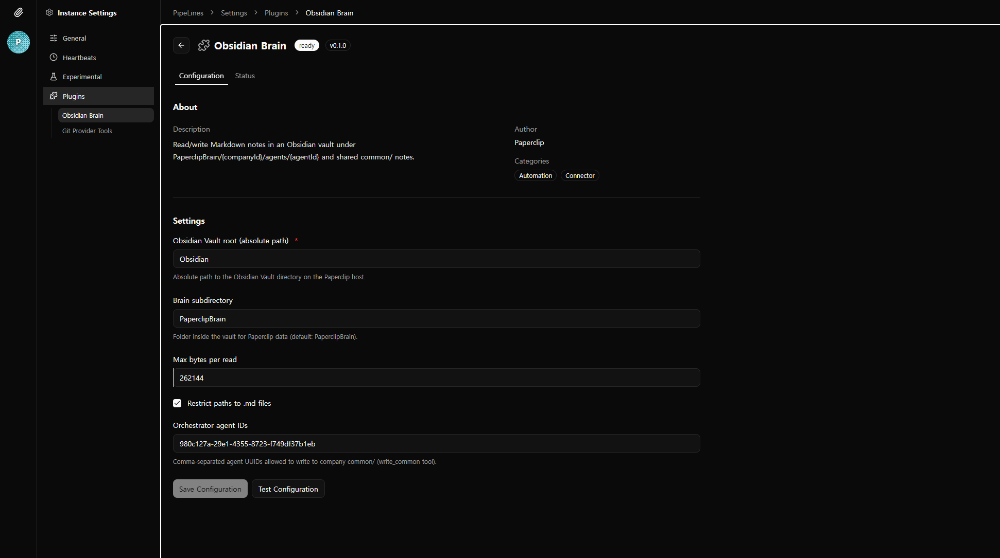

AI ORCHESTRATION PIPELINE

프로젝트 개요
오픈소스 AI 오케스트레이션 플랫폼 Paperclip을 기반으로, 로컬 환경의 에이전트 컨트롤 플레인이 외부 서비스(GitLab, Obsidian)와 안전하게 연동되어 실제 개발 사이클을 자동으로 돌 수 있는 파이프라인을 구축했습니다.
기본 구성은 로컬 전용이라 공인 진입점·신뢰 가능한 웹훅 수신 경로·토큰 비용 통제가 빠져 있었습니다. 이 프로젝트는 그 간극을 메우기 위해 인프라 아키텍처 전환, 비동기 자동화 파이프라인 설계, RAG 기반 지식 검색, 토큰 최적화를 수행한 기록입니다.
운영 화면
로컬에서 돌아가는 컨트롤 플레인 UI와 플러그인 설정 화면 일부입니다.


핵심 의사결정 — 3번의 아키텍처 전환
이 프로젝트는 단순 구현이 아니라, 운영하면서 구조적 문제를 발견하고 근본 원인을 해결한 과정이 핵심입니다. 아래 3가지 전환이 파이프라인의 현재 형태를 결정했습니다.
전환 1. 클라우드 서버 → 로컬 + Cloudflare Tunnel
Before
서버를 AWS EC2에 올려서 웹훅 수신
- 로컬 코드베이스에 에이전트가 접근 불가
- 코드 변경 시 매번 배포 필요
- 에이전트의 핵심 가치(로컬 파일 직접 조작)가 사라짐
After
로컬 서버 + Cloudflare Tunnel로 공인 HTTPS 노출
- 에이전트가 로컬 코드를 직접 읽고 쓸 수 있음
- 도메인 고정 + 즉시 반영
- 웹훅 배달 영속화로 신뢰성 확보
왜 이 결정을 했는가
AI 에이전트의 핵심 역할은 로컬 코드베이스를 직접 수정하는 것입니다. 클라우드에 서버를 올리면 외부 연동은 쉬워지지만, 에이전트가 코드를 만지려면 원격 접근이 필요해져 복잡도와 지연이 급증합니다. 대신 로컬에서 돌리되 Cloudflare Tunnel로 공인 진입점만 확보하면, 에이전트의 강점을 살리면서 외부 웹훅도 받을 수 있습니다.
전환 2. 에이전트 프롬프트 방식 → 서버 비동기 자동화
Before
에이전트가 LLM 턴 안에서 gitlab.create_issue 등 도구를 직접 호출
- 매 호출마다 토큰 소모
- 에이전트가 "잊으면" 동기화 누락
- 프롬프트에 GitLab 절차를 상세히 기술해야 함
After
이슈 생성·상태 변경 시 서버가 자동으로 GitLab API 호출
- 에이전트 입력 관점 토큰 제로
- 이벤트 기반, 누락 불가
- fire-and-forget, 실패해도 본 흐름 무영향
왜 이 결정을 했는가
에이전트에게 "이슈 만들면 GitLab에도 올려"라고 시키면, 매번 LLM 턴을 소모하면서도 때로 빼먹습니다. 이 동기화는 사실 결정적(deterministic) 작업이므로 LLM에 맡길 이유가 없습니다. 서버 이벤트 훅으로 옮기면 토큰도 쓰지 않고 100% 실행됩니다.
전환 3. 전체 읽기 → RAG 시맨틱 검색
Before
Obsidian에 지식을 저장하되, 에이전트가 필요한 노트를 통째로 읽음
- Vault가 커지면 입력 토큰 폭증
- 어떤 노트를 읽을지 에이전트가 판단 → 비효율
- 지식 재사용성은 높지만 비용 통제 불가
After
Xenova 임베딩 + 코사인 유사도 기반 시맨틱 검색(RAG)
- 질의에 관련된 상위 K개 청크만 반환
- JSON 파일 기반 경량 인덱스(외부 DB 불필요)
- 쓰기 후 증분 재인덱싱으로 항상 최신
왜 이 결정을 했는가
Obsidian 볼트의 지식 저장 자체는 효과적이었지만, 볼트가 커질수록 에이전트가 "어떤 노트가 지금 작업에 도움이 되는지" 판단하는 데 토큰을 쓰고, 틀리면 불필요한 컨텍스트가 전부 입력에 들어갑니다. 시맨틱 검색으로 질의 기반 필터링을 하면 이 문제가 구조적으로 해결됩니다.
참고 (로컬 벤치): 청킹 약 0.16 ms · 500×384 코사인 유사도 약 3.7 ms · Xenova 파이프라인 첫 로드 약 4.46 s · 워밍 후 짧은 쿼리 임베딩 약 8–22 ms. 동작 비교 표와 나머지 수치는 Obsidian 플러그인 문서 — RAG 도입 전후를 참고하세요.
오케스트레이션 아키텍처
위 전환들을 거친 현재 아키텍처입니다. 기획 에이전트가 이슈를 만들면 서버가 GitLab에 자동 동기화하고, 개발 에이전트는 Obsidian RAG로 필요한 지식만 가져와 작업합니다.
구현 상세 문서
각 주제별 구현·설계 판단을 정리한 서브페이지입니다.
- 1. 서버 개조 — AWS → 로컬 + Cloudflare Tunnel
클라우드에서 로컬로 전환한 이유, 공인 진입점, 배달 영속화·백오프 재시도, 진단 API, 502 구분 - 2. GitLab 플러그인 — 에이전트 프롬프트 → 비동기 자동화
에이전트 도구 호출에서 서버 이벤트 훅으로의 전환, REST 도구, MR 승인 브리지 - 3. Obsidian 플러그인 — 지식 저장 → RAG 시맨틱 검색
Xenova 임베딩, chunks.json 인덱스, 볼트 레이아웃, 토큰 절감 효과 - 4. 토큰 최적화 — 전체 전략 종합
하트비트 다이제스트 상한, 행동 가이드 설계, 시크릿 참조 패턴, 정량적 효과
기술 스택
| 계층 | 주요 스택 | 역할 · 구현 범위 |
|---|---|---|
| 런타임 | TypeScript · Node.js · Express | 컨트롤 플레인 API, 에이전트 실행·오케스트레이션 |
| 데이터 | PostgreSQL · Drizzle | 스키마·마이그레이션. 웹훅 배달 영속화 plugin_webhook_deliveries로 재시도·상태 추적 |
| 공개·인프라 | Cloudflare Tunnel (cloudflared) |
로컬 서버를 공인 HTTPS로 노출. PAPERCLIP_PUBLIC_BASE_URL로 웹훅·콜백 URL 고정 |
| 연동 | GitLab · Obsidian Vault | REST·MR 웹훅으로 이슈·파이프라인. Vault FS로 지식 베이스·경량 RAG(시맨틱 인덱스) |
| 플러그인 | 매니페스트 · 워커 · 도구 | webhooks · secrets.read-ref · handleWebhook 등으로 외부 이벤트·시크릿·도메인 로직을 경계 단위로 분리 |
트러블슈팅
운영 중 가장 크게 걸렸던 지점과 해결 방향입니다.
-
문제 1. 로컬 서버가 외부 웹훅을 받을 때 터널·네트워크 단절 등으로 요청이 유실될 수 있다.
해결. PostgreSQL에 웹훅 배달 이력 테이블(
plugin_webhook_deliveries)을 두고, 백오프 기반 재시도·상태 추적으로 수신 경로를 보강했습니다. 30초→2분→10분→1시간, 최대 5회까지 자동 재시도합니다. -
문제 2. 에이전트가 Obsidian Vault 전체를 참조하거나 하트비트 주기가 길어질 때 입력 토큰이 폭증한다.
해결. 하트비트 이슈 다이제스트 상한(본문 12,000자·코멘트 8,000자)으로 매 틱 텍스트량을 제한하고, Obsidian RAG로 필요한 청크만 가져오는 구조로 전환했습니다.
-
문제 3. Cloudflare 엣지 502와 애플리케이션 JSON 에러 응답이 같은 증상으로 보여 원인 진단이 어렵다.
해결.
text/plain+error code: 502면 인프라, JSON 응답이면 애플리케이션으로 분리하는 체크리스트를 만들어 진단 시간을 줄였습니다.
결과 및 임팩트
0
GitLab 동기화에 쓰이는
에이전트 토큰
에이전트 토큰
Top-K
전체 읽기 대신
시맨틱 검색으로 청크 제한
시맨틱 검색으로 청크 제한
12K / 8K
이슈 본문 / 코멘트
다이제스트 상한 (자)
다이제스트 상한 (자)
5회
웹훅 배달 실패 시
백오프 자동 재시도
백오프 자동 재시도
- 로컬 우선 + 안정적 외부 연동에이전트가 로컬 코드를 직접 다루면서도, Cloudflare Tunnel과 배달 영속화로 외부 웹훅 유실 가능성을 사실상 제거했습니다.
- 결정적 작업의 자동화GitLab 이슈 동기화처럼 반복·결정적인 작업을 서버 이벤트 훅으로 옮겨, 에이전트가 "잊어서" 동기화되지 않는 문제를 구조적으로 해결했습니다.
- 토큰 비용 예측 가능다이제스트 상한 + RAG + 시크릿 참조로, 볼트나 이슈가 아무리 커져도 에이전트 입력 크기를 예측 가능한 범위 안에 유지합니다.
연동 레퍼런스
이 파이프라인에서 API·문서·임베딩 모델로 직접 참고한 공식 자료입니다.